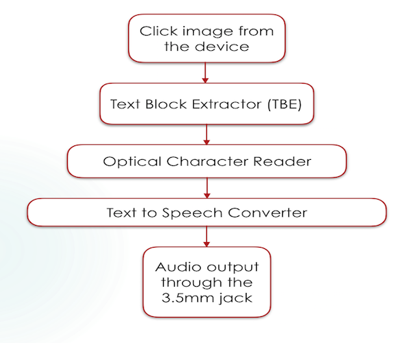
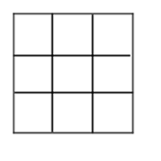

The flow of the device looks like something shown in the image. The image is first clicked from the
device. The captured image is then sent to the Text Block Extractor(TBE), where the image is processed
and paragraphs extracted. These paragraphs are then sent to an OCR (Tesseract in our case) to extract
the text. After the text has been extracted, we make use of text to speech converter (flite in our case)
to convert the text into speech. This speech is then heard by the user through his ear piece.

Overview of the device

Window one

Window two
Text Block Extraction is a two fold method where we analyse the image under consideration in two
orientations both horizontal and vertical. The analysis of the image begins with thresholding the image
and the converting the image into blocks of white and black background. Two kinds of windows are used
for this technique as shown in the image. The windows are used to check for neighborhood white boxes
where the center box is in consideration. The image obtained is then analysed for the neighbourhood of 7
by 7 windows with Ib, where Ib signifies black intensity and Iw signfies white intensity. If the
neighbourhood window contains more than or equal to 50 percent of white pixels then the black box is
converted into white.
The algorithm is able to extract text from the input even if the text is accompanied by some non-textual
part but major part of the image needs to be text. For this condition to be true, the optimal distance
of the camera from the image was determined experimentally to be around 15-20 cm. The source and camera
need to be stable so as to capture an
image with maximum clarity. The background of text is required to be invariantly white. To determine the
efficiency of the TBE algorithm, two parameters were calculated, PrecisionRate and Recall where
Precision is TrueParagraphs by TotalRetrievedParagraphs and Recall is TrueParagraphs by
TotalTrueParagraphs

Prototype Image